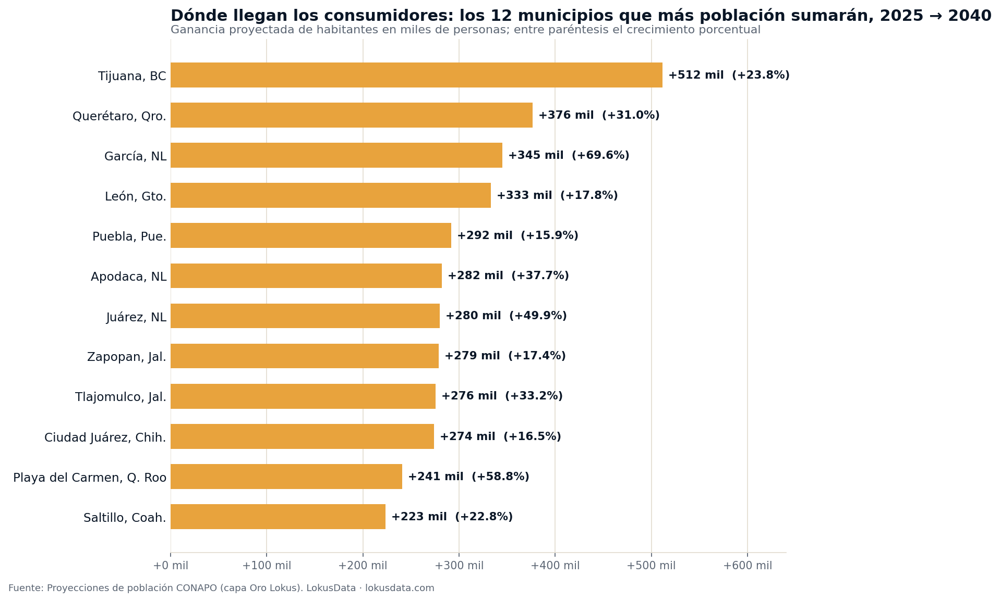
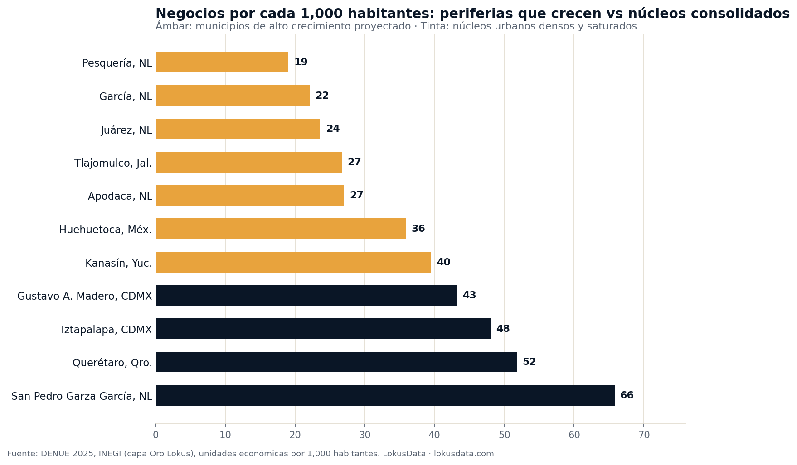

El mapa de la demanda 2040: dónde llegarán 5 millones de consumidores antes que la competencia
Veinte municipios concentrarán 5.15 millones de nuevos habitantes rumbo a 2040 según la proyección de CONAPO — y casi todos son periferias industriales donde la densidad de negocios es de la mitad a un tercio de la de los núcleos urbanos. La gente está llegando antes que la oferta. Ese desfase es la ventana.

El mercado mexicano no está creciendo: se está mudando
México sumará 11.4 millones de habitantes entre 2025 y 2040 (de 132.8 a 144.2 millones, proyección CONAPO). Visto así, parece un mercado que crece 8.6% y ya. Pero el agregado esconde el dato que importa para cualquier decisión de expansión: 1,094 de los 2,475 municipios del país — el 44% — van a perder población, mientras la ganancia se concentra en unas cuantas periferias urbanas. Los 20 municipios que más crecen absorberán 5.15 millones de personas: el 36.5% de todo el crecimiento municipal del país.
Para quien decide dónde abrir una sucursal, un punto de venta, una clínica o un desarrollo, esto cambia la pregunta. No es "¿cuánto crece México?" sino "¿en qué municipios va a estar la demanda que hoy no está — y quién va a llegar primero?". La proyección da algo que casi ningún dato de mercado ofrece: quince años de visibilidad sobre dónde se forma el volumen.
La primera lectura de negocio
El censo de clientes de 2040 ya está escrito en la proyección demográfica. Tijuana sumará 512 mil habitantes; García, 345 mil; Playa del Carmen, 241 mil. Quien dimensione su plan de expansión con la foto de hoy está optimizando para un mapa que va a dejar de existir.
Fuente: Proyecciones de población CONAPO, niveles nacional, estatal y municipal. Toda cifra a 2040 es proyección.
Dónde se forma el volumen: el top de municipios ganadores
Ordenamos el universo completo de municipios por ganancia absoluta de habitantes. El podio mezcla dos tipos de mercado: ciudades completas que siguen sumando volumen (Tijuana, Querétaro, León, Puebla, Ciudad Juárez, Saltillo) y periferias que están literalmente naciendo — García (+69.6%), Juárez NL (+49.9%), Tlajomulco (+33.2%), Playa del Carmen (+58.8%) —, donde el mercado de 2040 será entre un tercio y dos tercios más grande que el actual.
| Municipio | Población 2025 | Población 2040 | Nuevos habitantes | Cambio |
|---|---|---|---|---|
| Tijuana, BC | 2,151,740 | 2,663,508 | +511,768 | +23.8% |
| Querétaro, Qro. | 1,215,147 | 1,591,547 | +376,400 | +31.0% |
| García, NL | 495,731 | 840,854 | +345,123 | +69.6% |
| León, Gto. | 1,877,296 | 2,210,528 | +333,232 | +17.8% |
| Puebla, Pue. | 1,837,080 | 2,128,792 | +291,712 | +15.9% |
| Apodaca, NL | 747,838 | 1,029,872 | +282,034 | +37.7% |
| Juárez, NL | 560,836 | 840,851 | +280,015 | +49.9% |
| Zapopan, Jal. | 1,597,906 | 1,876,674 | +278,768 | +17.4% |
| Tlajomulco, Jal. | 829,928 | 1,105,538 | +275,610 | +33.2% |
| Ciudad Juárez, Chih. | 1,661,295 | 1,935,351 | +274,056 | +16.5% |
| Playa del Carmen, Q. Roo | 409,849 | 650,718 | +240,869 | +58.8% |
| Saltillo, Coah. | 979,001 | 1,202,353 | +223,352 | +22.8% |
Fuente: Proyecciones de población CONAPO, 2025→2040. Universo completo de 2,475 municipios; se muestran los 12 con mayor ganancia absoluta. Filas sombreadas: mercados que crecen más de 23% — expansión acelerada.
Y entre los municipios de más de 50 mil habitantes, los de crecimiento relativo más explosivo son todos periferias de clústeres industriales: Huehuetoca (+78.7%) en el Arco Norte del Valle de México, Pesquería (+74.0%) y Ciénega de Flores (+67.3%) en el anillo manufacturero de Monterrey, Kanasín (+72.1%) junto a Mérida, Cuautlancingo (+71.0%) pegado al clúster automotriz de Puebla y El Salto (+61.5%) en el corredor industrial de Guadalajara. El empleo industrial ancla la vivienda, y la vivienda trae al consumidor.
La gente llega antes que los negocios
Aquí está el hallazgo accionable. Cruzamos la proyección con la densidad comercial actual del DENUE (unidades económicas por cada 1,000 habitantes). En los municipios que van a estallar, la oferta instalada es de la mitad a un tercio de la de los núcleos consolidados: Pesquería tiene 19 negocios por cada mil habitantes y García 22, contra 48 de Iztapalapa, 52 de Querétaro o 66 de San Pedro Garza García.

La combinación es poco frecuente en un mercado maduro: demanda futura garantizada por proyección oficial + oferta actual baja. García tendrá 841 mil habitantes en 2040 — el tamaño del León de hace unos años — con la densidad comercial de hoy dimensionada para un municipio de la mitad de ese tamaño. Cada punto porcentual de ese crecimiento es demanda de abarrote, farmacia, servicios de salud, educación privada, banca, gimnasios, restaurantes y vivienda que alguien va a capturar.
Mercados subatendidos por construcción
Un núcleo urbano con densidad de 50+ negocios por mil habitantes compite por un consumidor que ya no crece. Una periferia con densidad de 20 y crecimiento proyectado de 70% es un mercado donde la competencia todavía no llega — y donde el costo de suelo y renta aún no incorpora la demanda que viene.
El otro lado del mapa: los mercados que van a encoger
El mismo reacomodo tiene cara B. Iztapalapa perderá 184 mil habitantes; Gustavo A. Madero, 122 mil; el municipio de Guadalajara, 68 mil; Naucalpan, 59 mil. La Ciudad de México completa perderá 560 mil personas y llegará a 2040 con edad mediana de 44 años. Son mercados enormes que seguirán siéndolo — Iztapalapa tendrá 1.6 millones de habitantes —, pero su vector cambió: menos volumen, más edad.
Eso no significa salir de ellos; significa cambiar la tesis. En un mercado que encoge y envejece, el crecimiento por apertura de puntos nuevos deja de funcionar y el juego pasa a ser participación de mercado, conversión del punto existente y reconversión de la oferta hacia el consumidor senior — salud, conveniencia, entrega a domicilio, formatos de proximidad. El caso extremo es San Pedro Garza García: la proyección le quita 57% de población pero le deja una estructura única — uno de cada tres habitantes tendrá 65 años o más en 2040 —, un mercado que se achica en personas y se especializa en el segmento senior.
Insights para la acción
- Dimensiona la expansión con el mapa de 2040, no con el de hoy: la proyección municipal de CONAPO es el único dato de demanda con quince años de visibilidad. Úsala como capa base de cualquier plan de aperturas 2026-2030.
- Prioriza las periferias industriales con densidad comercial baja: García, Pesquería, Ciénega de Flores, Huehuetoca, Kanasín y El Salto combinan crecimiento proyectado de 61% a 79% con apenas 19-40 negocios por mil habitantes. Ahí el primero que llega fija el estándar de la categoría.
- En volumen puro, Tijuana es el premio mayor: +512 mil habitantes, más nuevos habitantes que cualquier otro municipio del país. Querétaro (+376 mil) es el que más rápido crece (+31%) entre los municipios centrales del top.
- Cambia la tesis en los núcleos que encogen: en Iztapalapa, GAM, Guadalajara centro o Naucalpan el juego es participación y reconversión senior, no apertura. Y cuidado con proyectos dimensionados a población creciente en municipios que ya la están perdiendo.
Conclusión
El crecimiento de México dejó de ser una marea pareja: es un reacomodo con ganadores y perdedores definidos, y ya está proyectado municipio por municipio. Cinco millones de consumidores van a concentrarse en veinte lugares; el 44% de los municipios va a encoger. La ventaja competitiva no está en el dato — es público — sino en usarlo antes: hoy el suelo, las rentas y la competencia de García, Kanasín o Huehuetoca todavía están a precio del mapa viejo. En quince años, el que haya leído la proyección a tiempo va a parecer visionario. Solo leyó a CONAPO.
Análisis basado en las Proyecciones de la Población de México y de las Entidades Federativas de CONAPO (serie anual, niveles nacional, estatal y municipal; 2,475 municipios) — toda cifra a 2040 es proyección, no medición — y en el DENUE 2025 del INEGI para densidad de unidades económicas (clasificación SCIAN 2023). Son metodologías distintas y se observan por separado. Ventana de análisis 2025→2040; fecha de análisis: 24 de julio de 2026. Los municipios de creación reciente en Chiapas muestran tasas extremas de extrapolación y se excluyeron de los rankings. Para dimensionar la demanda futura, la densidad de competencia y el perfil de cualquier municipio con datos oficiales integrados, visita lokusdata.com